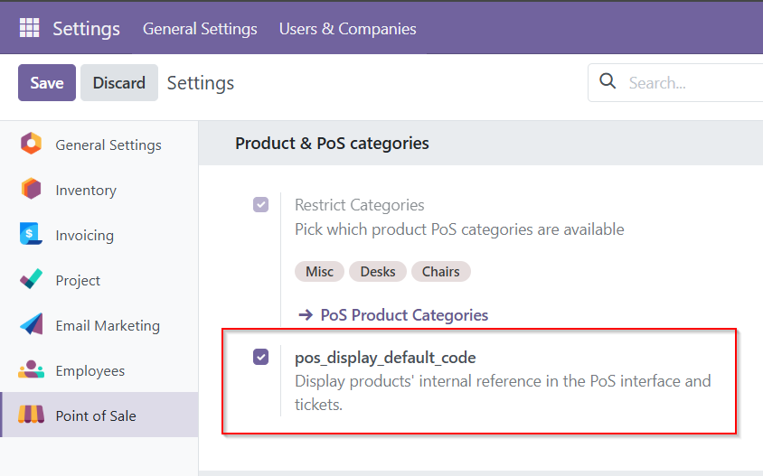

How It Works
Simple steps to activate internal reference display in POS.
Step 1: Install the Module
Locate and install the “POS – Display Internal Reference in Product List” module from the Odoo Apps.

Step 2: Enable Option
Please check the option in the Point of Sale settings.

Step 3: Use During Sales
Cashiers can now easily identify products using internal references during transactions.